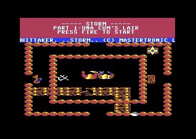
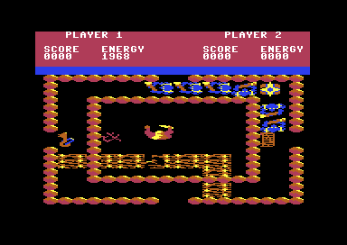

<meta charset="utf-8">
<meta name="viewport" content="width=device-width, initial-scale=1">
<title>Storm</title>
<link rel="preconnect" href="https://fonts.googleapis.com">
<link rel="stylesheet" href="https://fonts.googleapis.com/css2?family=Lato:wght@400;700;900&family=IBM+Plex+Mono:wght@400;500&display=swap">
<style>
:root{
  --bg:#23262d; --paper:#e9e7e1; --surface:#ffffff; --surface-2:#f1efea; --line:#d5d3cc; --line-soft:#e0ded8;
  --ink:#2f3136; --ink-soft:#55585f; --ink-mute:#80838a;
  --link:#1f5fa8; --link-hover:#154480; --accent:#1f5fa8;
  --amber:#c25a00; --cyan:#1f5fa8; --coral:#d04a3a; --green:#2a8a4a; --violet:#4a5bd6; --hl:#fff0c2;
  --chip:#2f3136; --chip-ink:#ffffff;
  --c64blue:#40318d; --c64grey:#686868;
  --fd:'Lato',system-ui,sans-serif; --fb:'Lato',system-ui,sans-serif; --fm:'IBM Plex Mono',ui-monospace,Menlo,monospace;
  --col:1080px; --gx:68px; --fs:17px; --lh:1.6; --hw:900; --h1:46px; --h2:26px; --sy:48px; --pp:26px; --r:10px;
  --plate-shadow:0 1px 2px rgba(0,0,0,.05),0 4px 14px rgba(0,0,0,.05);
}
*{box-sizing:border-box}
html{background:var(--bg);min-height:100%}
body{background:var(--paper);color:var(--ink);font-family:var(--fb);font-size:var(--fs);line-height:var(--lh);max-width:var(--col);margin:0 auto;min-height:100vh;padding:0 0 4rem}
h1,h2,h3{font-weight:var(--hw);letter-spacing:-.01em;text-wrap:balance;color:var(--ink);margin:0}
.wrap{padding:0 var(--gx)}
.hero{padding:48px var(--gx) 8px;text-align:left}
.eyebrow{font-family:var(--fm);font-size:12px;letter-spacing:.08em;text-transform:uppercase;color:var(--ink-mute);margin:0 0 10px}
.hero h1{font-size:var(--h1);line-height:1.15;letter-spacing:-.02em;margin:0 0 14px}
.hero .sub{margin:0 0 .6em;color:var(--ink-soft)}
section{padding:var(--sy) 0 24px}
section:last-of-type{border-bottom:none}
.fig{font-family:var(--fm);font-size:12px;letter-spacing:.08em;text-transform:uppercase;color:var(--ink-mute);margin:0 0 10px}
h2.t{font-size:var(--h2);margin-bottom:12px}
.lede{color:var(--ink-soft);margin:0 0 30px}
.plate{background:var(--surface);border:1px solid var(--line);border-radius:var(--r);padding:var(--pp);box-shadow:var(--plate-shadow)}
.cap{font-size:14px;color:var(--ink-mute);margin-top:14px;line-height:1.55}
.cap b{color:var(--ink);font-weight:700}
code{font-family:var(--fm);font-size:.82em;background:var(--chip);color:var(--chip-ink);border-radius:4px;padding:2px 6px;white-space:nowrap}

.st-cv{display:block;width:100%;height:auto;image-rendering:pixelated;background:#000;border-radius:4px}
.st-stack{position:relative}
.st-stack canvas+canvas{position:absolute;left:0;top:0;background:transparent;pointer-events:none}
.st-two{display:grid;grid-template-columns:1fr 1fr;gap:16px;margin:0 0 20px}
.st-fig{margin:0}
.st-fig img{display:block;width:100%;height:auto;image-rendering:pixelated;border-radius:4px}
.st-row{display:flex;flex-wrap:wrap;gap:10px 14px;align-items:center;margin:12px 0;font-family:var(--fm);font-size:13px;color:var(--ink-soft)}
.st-row label{display:flex;gap:6px;align-items:center}
.st-btn{font:inherit;font-family:var(--fm);font-size:13px;background:var(--surface);border:1px solid var(--line);border-radius:6px;padding:5px 12px;color:var(--ink);cursor:pointer}
.st-btn:hover{border-color:var(--ink-mute)}
.st-btn[aria-pressed="true"]{background:var(--chip);color:var(--chip-ink);border-color:var(--chip)}
.st-out{font-family:var(--fm);font-size:13px;color:var(--ink);margin:10px 0 0;min-height:1.5em;line-height:1.55}
.st-note{font-family:var(--fm);font-size:13px;color:var(--coral);margin:8px 0 0}
.st-tbl{border-collapse:collapse;font-size:14px;width:100%;margin:12px 0 18px}
.st-tbl th,.st-tbl td{text-align:left;vertical-align:top;padding:6px 10px;border-bottom:1px solid var(--line-soft)}
.st-tbl th{font-weight:700;color:var(--ink-soft)}
.st-wide{overflow-x:auto}
.st-form{display:flex;flex-wrap:wrap;gap:10px 16px;align-items:center;font-family:var(--fm);font-size:13px;color:var(--ink-soft)}
.st-form input,.st-form select,.st-row select{font:inherit;font-size:13px;padding:4px 6px;border:1px solid var(--line);border-radius:6px;background:var(--surface);color:var(--ink)}
.st-form input{width:6.5em}
.st-slots{display:grid;grid-template-columns:repeat(10,minmax(0,1fr));gap:4px;margin:10px 0 0;font-family:var(--fm);font-size:11px;text-align:center}
.st-slots div{border:1px solid var(--line);border-radius:5px;padding:4px 2px;color:var(--ink-mute);background:var(--surface-2)}
.st-slots div.st-on{color:var(--ink);background:var(--surface);border-color:var(--ink-mute)}
.st-slots b{display:block;font-weight:500;color:var(--ink)}
.st-gal{display:grid;grid-template-columns:repeat(auto-fill,minmax(112px,1fr));gap:10px}
.st-card{border:1px solid var(--line-soft);border-radius:6px;padding:6px;font-family:var(--fm);font-size:11px;color:var(--ink-soft);line-height:1.4}
.st-card canvas{display:block;width:96px;height:48px;image-rendering:pixelated;background:#000;border-radius:3px;margin:0 0 4px}
.st-card b{display:block;color:var(--ink);font-weight:500}
@media (max-width:640px){:root{--gx:16px}.st-two{grid-template-columns:1fr}.st-slots{grid-template-columns:repeat(5,minmax(0,1fr))}}
.st-cv[hidden]{display:none}
</style>
<!-- tabs -->
<header class="hero">
  <p class="eyebrow">1986 · Mastertronic</p>
  <h1>Storm</h1>
  <p class="sub">A warrior and a wizard fight through a hundred rooms where nothing is a sprite: every figure is redrawn into the character set at each step. The magic that should clear a room counts its monsters, and after a kill the count lies.</p>
</header>
<main class="wrap">

<section id="game">
  <p class="fig">01 · The game</p>
  <h2 class="t">A rescue through a hundred rooms</h2>
  <div class="st-two">
    <figure class="st-fig"><p class="cap">The title, drawn over the first room.</p></figure>
    <figure class="st-fig"><p class="cap">Agravain in the first room, with six monsters out.</p></figure>
  </div>
  <p>The wizard Una Cum has taken Corrine, Prince Storm's wife, to his lair under a ruined abbey. Storm, a warrior, goes after her with an old friend, the wizard Agravain Undead. Each player has a joystick, and one player alone plays Agravain.</p>
  <p>The lair is a hundred rooms, one screen each. Generators in the rooms make monsters that walk towards the players and drain their energy by touch, and the energy also runs down with hunger, so the players eat the food they find and drink bottles of restorative fluid. Keys open locked doors, and three snake brooches open the laboratory where Corrine is held. Finding her ends the game; when every player's energy has run out, the game is over.</p>
</section>

<section id="music">
  <p class="fig">02 · The title tune</p>
  <h2 class="t">Music: one tune, on the title only</h2>
  <p class="lede">David Whittaker's tune plays while the title waits and stops the moment play starts. A game has no music at all, only effects.</p>
  <div class="plate"><div id="st-sid"></div>
    <p class="cap">The title tune played by the game's own music driver: its bytes, <code>$9000</code>-<code>$99C1</code>, run once a frame on a small 6502 in the page, heard through the site's model of the SID. Checked against the same bytes in the kit's 6502 simulator: every register write of 7,000 frames matches. The bass goes down to about 31 Hz, which laptop and phone speakers barely play.</p></div>
  <p>The driver is the file <code>storm-c</code>, the one HVSC lists as Whittaker's Storm: <code>music_init</code> at <code>$9000</code> starts it and <code>music_play</code> at <code>$911B</code> plays a frame of it. The title calls the first, and the interrupt that draws the panel calls the second once a frame while <code>title_mode</code> is set. When a game starts, <code>music_stop</code> at <code>$9227</code> silences the chip.</p>
  <p>Each voice reads an order list of patterns (<code>tune_orders</code>), and each pattern is a run of bytes: below <code>$80</code> a note, <code>$80</code>-<code>$93</code> a command such as a waveform, a drum, or the end of the pattern, <code>$C0</code>-<code>$CF</code> an arpeggio and <code>$E0</code>-<code>$FF</code> a note's length. A tick comes every five frames, and the whole tune is 640 ticks, so it loops every 64 seconds.</p>
  <table class="st-tbl">
    <tr><th>Voice</th><th>Intro, 128 ticks</th><th>Then, 512 ticks</th></tr>
    <tr><td>1</td><td><code>bass_intro</code> four times</td><td>bass and drums under A minor, F, C, and G (<code>bass_a</code> ... <code>bass_g</code>), eight times</td></tr>
    <tr><td>2</td><td><code>chime_intro</code>: ring-modulated chimes on C</td><td>each chord as an arpeggio (<code>chord_a</code> ... <code>chord_g</code>), eight times</td></tr>
    <tr><td>3</td><td><code>pad_intro</code>: a held C with an octave jump</td><td>the melody in four-bar phrases: <code>tune_1</code>, 1, 2, 2, 3, 3, 1, 1</td></tr>
  </table>
</section>

<section id="rooms">
  <p class="fig">03 · A room</p>
  <h2 class="t">Each room is four short lists and its doorways</h2>
  <p class="lede">A room is drawn from four lists, of floor pieces, walls, generators, and objects, and four bits that say where its outer wall has doorways. Turn each part off and on to see what it draws.</p>
  <div class="plate" id="st-room">
    <div class="pick"><button class="step" data-d="-1" aria-label="Previous room">‹</button><select id="st-room-pick" aria-label="Room"></select><button class="step" data-d="1" aria-label="Next room">›</button></div>
    <canvas id="st-room-cv" class="st-cv" width="320" height="144"></canvas>
    <div class="st-row" id="st-layers">
      <label><input type="checkbox" checked data-l="0"> floor <code>$5984</code></label>
      <label><input type="checkbox" checked data-l="1"> walls <code>$5A21</code></label>
      <label><input type="checkbox" checked data-l="2"> outer wall and doorways <code>$5AD1</code></label>
      <label><input type="checkbox" checked data-l="3"> generators <code>$5BF8</code></label>
      <label><input type="checkbox" checked data-l="4"> objects <code>$5CD1</code></label>
    </div>
    <p class="st-out" id="st-room-desc"></p>
    <div class="st-wide"><table class="st-tbl" id="st-room-tbl"></table></div>
    <p class="cap">Drawn by the game's own routines, run on a small 6502 in the page over the listing's bytes, after <code>reset_walls</code> and <code>reset_objects</code> have put every room back as a new game finds it. Checked against the kit's 6502 simulator running the same code: in all 100 rooms, drawn whole and with each list left out, every byte of memory matches. <a href="levels.html">Maps</a> shows every room.</p>
  </div>
  <p>The play area is 18 cells across and 18 down, a cell being two characters wide and one high (<code>cell_address</code>). Each room has a pointer into five tables, and each list ends early at a zero byte. Floor pieces (<code>floor_ptrs</code>) are runs of 4-by-2-character decorations; walls (<code>wall_ptrs</code>) are runs of single cells in one of three styles; generators (<code>gen_ptrs</code>) and objects (<code>obj_ptrs</code>) are one record each. The outer wall comes from no list: <code>draw_border</code> draws it with the last wall record's style and cuts a doorway where <code>exit_bits</code> has a bit set. In rooms 37 and 81, whose walls mix two styles, the outer wall <a href="discoveries.html#border">takes the second</a>.</p>
  <p>The rooms sit on a map of 16 by 12 places (<code>room_map</code>), each holding a room number in decimal, tens and units, or <code>$FF</code> for none. Leaving by a side moves one place along it, and by the top or the bottom sixteen. The game starts in room 0, at row 4, column 6.</p>
  <p>A trap or a pickup changes the lists themselves: a taken object gets bit 7 of its type set, and a wall a trap removes gets bit 7 of its third byte. A room stays as the players left it until a new game runs <code>reset_walls</code> and <code>reset_objects</code>.</p>
</section>

<section id="monsters">
  <p class="fig">04 · Monsters</p>
  <h2 class="t">One monster moves at a time, straight at Agravain</h2>
  <p class="lede">Every 50 passes of the main loop a generator puts out a monster, and on each pass one monster takes a step. Run the game's own code and watch them come.</p>
  <div class="plate" id="st-mon">
    <div class="st-row">
      <select id="st-mon-room" aria-label="Room"></select>
      <button type="button" class="st-btn" id="st-mon-step">One pass</button>
      <button type="button" class="st-btn" id="st-mon-run" aria-pressed="false">Run</button>
      <button type="button" class="st-btn" id="st-mon-reset">Start again</button>
    </div>
    <canvas id="st-mon-cv" class="st-cv" width="320" height="144"></canvas>
    <p class="st-out" id="st-mon-out"></p>
    <div class="st-slots" id="st-mon-slots"></div>
    <p class="cap">Each pass runs <code>move_monster</code> (<code>$5FB6</code>) and then <code>spawn</code> (<code>$5E11</code>), as the main loop does, on the page's 6502, over the room <code>enter_room</code> drew, with Agravain where a new game puts him (<code>start_places</code>), standing still. Run plays 19 passes a second, the rate counted in the emulator with six monsters out. Checked against the kit's 6502 simulator over 2,000 passes in each of the 47 rooms offered here: every byte of memory matches after every pass.</p>
  </div>
  <p><code>spawn</code> counts passes, and at the 50th (<code>spawn_period</code>) it takes the next generator in turn. If that generator still stands and fewer than ten monsters are out, it tries the space above it, then to its right, below, and to its left, and puts a monster of the generator's kind into the first slot of ten that is empty. Kinds 1 to 3 start with as many hit points as their number, kinds 4 to 6 with two fewer.</p>
  <p><code>move_monster</code> takes the slots in turn, one a pass, so with ten out each monster steps once in ten passes. An empty slot costs a busy wait (<code>delay</code>), which keeps a pass about as long however many monsters there are. The monster heads for Agravain, or in a two-player game for Storm when he is nearer, and <code>step_monster</code> tries the vertical step first, then the horizontal one, each only if nothing is in the way. There is no path finding: a wall between a monster and its target holds it there, which is why monsters gather against walls.</p>
  <p>Nothing here is a sprite. <code>compose</code> builds each figure's characters as it moves: for every character it ANDs the picture with a mask made from the floor character beneath and ORs in that floor character, so floor decorations stay on top and the figure fills the gaps. Ten monsters take characters <code>$A0</code>-<code>$EF</code>, eight each; the two players, the objects, and the generators have ranges of their own. When a step finds a player in the way, <code>touch_damage</code> charges him four times the monster's kind byte. What that costs him is the next section's subject, and a spell that should clear the room has <a href="discoveries.html">a bug of its own</a>.</p>
</section>

<section id="energy">
  <p class="fig">05 · Energy</p>
  <h2 class="t">Armour that outweighs a drain stops it completely</h2>
  <p class="lede">Hunger and monsters' touches drain each player's energy. Armour stands in front of every drain, and while it is greater than the drain, nothing at all is lost.</p>
  <div class="plate" id="st-en">
    <div class="st-form">
      <label>Player <select id="st-en-who"><option value="0">Agravain</option><option value="1">Storm</option></select></label>
      <label>Armour <input id="st-en-arm" type="number" min="0" max="12" value="4"></label>
      <label>Energy <input id="st-en-nrg" type="number" min="0" max="9999" value="2000"></label>
      <label>Drain <select id="st-en-drain"></select></label>
    </div>
    <div class="st-row">
      <button type="button" class="st-btn" id="st-en-one">Take it once</button>
      <button type="button" class="st-btn" id="st-en-fifty">Take it 50 times</button>
    </div>
    <div class="st-out" id="st-en-out"></div>
    <p class="cap">Runs the game's own <code>lose_energy</code> (<code>$7FB6</code>) on the page's 6502, in decimal mode as the game does, with the player's armour, energy, and drain set as the main loop sets them. Checked against the kit's 6502 simulator over 21,060 cases (every armour from 0 to 12, 18 drains, 15 energies, and the three warning states, for both players): every byte of memory matches.</p>
  </div>
  <p>Agravain starts with 2,000 energy and Storm with 2,500, kept as four decimal digits (<code>game_init</code>). Every 25 passes of the main loop, about 1.3 seconds, hunger takes 2 from Agravain and 1 from Storm. A monster's touch adds four times its kind byte to the drain, so 4 for kind 1 up to 24 for kind 6; the kind byte also carries some monsters' animation, which <a href="discoveries.html">makes some touches far worse</a>.</p>
  <p><code>lose_energy</code> looks at the armour first. If the armour is greater than the drain, nothing is lost and the armour stays. Otherwise the armour goes down by one and the player loses the drain less the armour that is left. Below 1,000 and again below 500 a warning scrolls along the message line with a sound, and below zero the player dies.</p>
  <table class="st-tbl">
    <tr><th>Pickup</th><th>Effect (<code>obj_effect</code>)</th></tr>
    <tr><td>Food</td><td>200 energy</td></tr>
    <tr><td>Restorative fluid</td><td>500 energy</td></tr>
    <tr><td>Armour</td><td>2 for Agravain, 3 for Storm, while the armour is 9 or less</td></tr>
    <tr><td>Jewel-filled chest</td><td>1,000 points</td></tr>
  </table>
  <p>So one piece of armour for Storm, or two for Agravain, ends hunger for good: armour 3 is greater than Storm's 1, and 4 greater than Agravain's 2. In the emulator, Agravain with armour 4 ended 500 frames with the energy he started with.</p>
</section>

<section id="objects">
  <p class="fig">06 · Objects</p>
  <h2 class="t">The same picture can be food or a trap</h2>
  <p class="lede">Every object in a room is one of 28 pictures. A second byte decides whether touching it takes it, stops the player, or springs a trap.</p>
  <div class="plate"><div class="st-gal" id="st-gal"></div>
    <p class="cap">Each picture drawn by the game's <code>draw_object</code> (<code>$5D67</code>) on the page's 6502, in its colours from <code>colour_rows</code>. Under each, how many of the rooms' records use it, by class: taken, solid or a trap.</p></div>
  <p>An object record is three bytes: its place, its type (one of the pictures in <code>obj_shapes</code>) and its class. Class 1 is taken or opened by walking into it, class 2 is solid, and anything else is a cabbala symbol that springs the room's trap (<code>touch_object</code>). So the same picture can be food in one room and a trap in another: in room 97, four of the five plates of food are traps.</p>
  <p>Doors are objects too. A type <code>$0D</code> door takes a key, and there are ten of each. Types <code>$0F</code> and <code>$1A</code> need special keys 7 and 8, one door each, and the key is kept. The laboratory door, type <code>$1B</code> in room 3, opens for exactly three snake brooches, <a href="discoveries.html#brooches">and not for four</a>; three can be taken, and a fourth, in room 32, is solid. A refused door plays a sound and its message, and the player stops.</p>
  <p>A trap (<code>trap_fire</code>) erases every wall of its room marked for it and every object flagged the same way, the symbol included. Most open a way through walls; some take away food; the traps in rooms 17 and 41 remove nothing but themselves.</p>
</section>

<section id="screen">
  <p class="fig">07 · The screen</p>
  <h2 class="t">Four raster interrupts split every frame</h2>
  <p class="lede">Four raster interrupts split the screen into a panel in the C64's own font, a scrolling message line, and the play area in the game's characters.</p>
  <div class="plate">
    <div class="st-stack"><canvas id="st-frame" class="st-cv"></canvas><canvas id="st-frame-ov" class="st-cv"></canvas></div>
    <div class="st-row"><button type="button" class="st-btn" id="st-frame-bands" aria-pressed="false">Mark the interrupts</button></div>
    <p class="cap">A frame of play recorded in the emulator (every write to the video chip, with the line and cycle it came on, and memory as the frame began) and drawn by the site's model of the chip. All 104,448 pixels match the emulator's picture. The panel and the message line use the character ROM; the page carries only the 19 characters the panel shows, 152 bytes from Commodore's character ROM 901225-01 (the one VICE runs), at offsets <code>$0008-$01CF</code> of its upper-case set.</p>
  </div>
  <p>The interrupt routine <code>irq</code> runs a list (<code>irq_list</code>) of four entries, each naming the routine for this line and the line of the next interrupt.</p>
  <table class="st-tbl">
    <tr><th>Line</th><th>Routine</th><th>What it does</th></tr>
    <tr><td><code>$58</code></td><td><code>message_band</code></td><td>a blue background and the message line's fine scroll</td></tr>
    <tr><td><code>$60</code></td><td><code>play_band</code></td><td>the game's character set at <code>$0800</code>, a black background, multicolour, and one step of the sound effects</td></tr>
    <tr><td><code>$E8</code></td><td><code>frame_mark</code></td><td>sets <code>frame_flag</code>, the main loop's clock</td></tr>
    <tr><td><code>$FF</code></td><td><code>panel_band</code></td><td>the ROM font on red for the panel, the title's music, and the message line moved on</td></tr>
  </table>
  <p>The main loop waits for <code>frame_flag</code> twice a pass, so a pass takes at least two frames, and longer when its work overruns: with six monsters out, 384 passes took 1,000 frames. The game enables no sprites (<code>$D015</code> is 0).</p>
</section>

<section id="controls">
  <p class="fig">08 · Controls</p>
  <h2 class="t">Turn, then walk</h2>
  <p class="lede">Left and right turn a player a quarter turn; up walks one cell the way he faces. Down is magic.</p>
  <table class="st-tbl">
    <tr><th>Joystick</th><th>Agravain (port 1, <code>$DC01</code>)</th><th>Storm (port 2, <code>$DC00</code>)</th></tr>
    <tr><td>Left, right</td><td colspan="2">turn a quarter, at most once every two passes (<code>turn_delay</code>)</td></tr>
    <tr><td>Up</td><td colspan="2">one cell forward (<code>walk</code>)</td></tr>
    <tr><td>Fire</td><td colspan="2">a shot, when his last one has gone (<code>control</code>)</td></tr>
    <tr><td>Down</td><td>a mask: every generator in the room removed</td><td>nothing</td></tr>
    <tr><td>Down and fire</td><td>a scroll: the monsters cleared</td><td>an amulet: the monsters cleared</td></tr>
  </table>
  <p>The players' controls are read every other pass. On the title, fire on either joystick starts; then left asks for one player and right for two, and up shows the instructions and down skips them. Masks, scrolls, and amulets, like keys and brooches, are counters the two players share.</p>
</section>

<section id="sound">
  <p class="fig">09 · Sound effects</p>
  <h2 class="t">Sound: fifteen effects on two voices</h2>
  <p class="lede">Every sound in play is one of fifteen records of twenty bytes, swept on voices 1 and 3 once a frame.</p>
  <div class="plate"><div id="st-sfx"></div>
    <p class="cap">Each effect played by the game's own code, <code>sfx_start</code> and then <code>sfx_update</code> once a frame (<code>$5632</code>-<code>$5937</code>), on a small 6502 in the page. Checked against the kit's 6502 simulator: every register write of all 15 effects, 805 frames, matches. Each starts from a silenced chip, as the first effect of a game does.</p></div>
  <p>A record (<code>sfx_records</code>) holds a duration, a step length, start frequencies, envelopes, waveforms, and pulse widths for both voices, a sweep for each, a repeat count, and a flag that adds a random byte to voice 1's pitch at each repeat. <code>sfx_update</code> sweeps both voices every frame, restarts them at each repeat, and stops the effect when its duration runs out. Effect 5 is never asked for.</p>
</section>

</main>
<footer style="margin:16px 0 0;padding:22px var(--gx) 0;border-top:1px solid #e0ded8;font-family:'IBM Plex Mono',ui-monospace,Menlo,monospace;font-size:12px;color:#80838a"><a href="https://github.com/gamesexplained/gamesexplained" style="color:#1f5fa8;text-decoration:none">GitHub</a> · <a href="https://discord.gg/3V9GWyRDWV" style="color:#1f5fa8;text-decoration:none">Discord</a><br>© Games Explained contributors. Write-ups, facts and symbol maps are available under <a href="https://creativecommons.org/licenses/by-sa/4.0/" style="color:#1f5fa8;text-decoration:none">CC BY-SA 4.0</a>; code under <a href="https://opensource.org/licenses/MIT" style="color:#1f5fa8;text-decoration:none">MIT</a></footer>
<script type="application/json" data-listing="listing.json">["$0800-$5937", "$5938-$6870", "$7EA2-$8105", "$8106-$88D5", "$9000-$99C1"]</script>
<script src="../../lib/c64.js"></script>
<script src="../../lib/sid.js"></script>
<script>
/* storm-machine */
// The game's own code at work in the page: a 6502 core (stormCore), the room drawing and the
// monsters run on it (stormRooms), and a painter for the play area (stormPaint). Checked against
// the kit's 6502 simulator by test_machine.js beside this page.
// A small 6502: runs Storm's own routines on the bytes of the listing. m is 64 KB of
// RAM; io answers $D000-$DFFF (the chips), except colour RAM ($D800-$DBFF), which is kept in m.
// call(entry, regs, hooks) runs from entry to the routine's return, starting with A, X and Y as regs
// gives them (0 otherwise) and every flag clear. A hook at an address runs
// before the instruction there: returning 'rts' returns from the subroutine it stands in for,
// returning true ends the call there.
function stormCore(m, io) {
  'use strict';
  let a = 0, x = 0, y = 0, sp = 0xFF, pc = 0, n = 0, v = 0, z = 0, c = 0, d = 0;
  const rd = (ad) => (ad >= 0xD000 && ad < 0xE000 && (ad < 0xD800 || ad >= 0xDC00)) ? io.read(ad) : m[ad];
  const wr = (ad, val) => { if (ad >= 0xD000 && ad < 0xE000 && (ad < 0xD800 || ad >= 0xDC00)) io.write(ad, val); else m[ad] = val; };
  const nz = (r) => { n = r & 0x80; z = r === 0 ? 1 : 0; return r; };
  const push = (b) => { m[0x100 + sp] = b; sp = (sp - 1) & 255; };
  const pull = () => { sp = (sp + 1) & 255; return m[0x100 + sp]; };
  const flags = () => (n ? 0x80 : 0) | (v ? 0x40 : 0) | 0x30 | (d ? 8 : 0) | 4 | (z ? 2 : 0) | (c ? 1 : 0);
  const setf = (p) => { n = p & 0x80; v = p & 0x40; d = p & 8; z = p & 2; c = p & 1; };
  const adc = (b) => {
    if (d) {
      let lo = (a & 15) + (b & 15) + (c ? 1 : 0), hi = (a >> 4) + (b >> 4);
      if (lo > 9) { lo += 6; hi++; }
      z = ((a + b + (c ? 1 : 0)) & 255) === 0 ? 1 : 0; n = (hi << 4) & 0x80; v = (~(a ^ b) & (a ^ (hi << 4)) & 0x80);
      if (hi > 9) hi += 6;
      c = hi > 15 ? 1 : 0; a = ((hi << 4) | (lo & 15)) & 255; return;
    }
    const s = a + b + (c ? 1 : 0); v = (~(a ^ b) & (a ^ s) & 0x80); c = s > 255 ? 1 : 0; a = nz(s & 255);
  };
  const sbc = (b) => {
    if (d) {
      const s = a - b - (c ? 0 : 1); let lo = (a & 15) - (b & 15) - (c ? 0 : 1), hi = (a >> 4) - (b >> 4);
      if (lo & 16) { lo -= 6; hi--; }
      if (hi & 16) hi -= 6;
      v = ((a ^ b) & (a ^ s) & 0x80); c = s >= 0 ? 1 : 0; nz(s & 255); a = ((hi << 4) | (lo & 15)) & 255; return;
    }
    adc(b ^ 255);
  };
  const cmp = (r, b) => { const s = r - b; c = s >= 0 ? 1 : 0; nz(s & 255); };
  function step() {
    const op = m[pc], b1 = m[(pc + 1) & 0xFFFF], b2 = m[(pc + 2) & 0xFFFF], w = b1 | b2 << 8;
    const zpx = (b1 + x) & 255, zpy = (b1 + y) & 255;
    const izx = m[zpx] | m[(zpx + 1) & 255] << 8, izy = ((m[b1] | m[(b1 + 1) & 255] << 8) + y) & 0xFFFF;
    const abx = (w + x) & 0xFFFF, aby = (w + y) & 0xFFFF;
    const g = op & 3, mode = (op >> 2) & 7;
    let ea = -1, len = 2;
    if (g === 1) { ea = [izx, b1, -2, w, izy, zpx, aby, abx][mode]; len = (mode === 3 || mode >= 6) ? 3 : 2; }
    else { ea = [-2, b1, -2, w, -1, (op === 0x96 || op === 0xB6) ? zpy : zpx, -1, (op === 0xBE) ? aby : abx][mode]; len = (mode === 3 || mode === 7) ? 3 : 2; }
    const M = () => (ea === -2 ? b1 : rd(ea));
    switch (op) {
      case 0x01: case 0x05: case 0x09: case 0x0D: case 0x11: case 0x15: case 0x19: case 0x1D: a = nz(a | M()); break;
      case 0x21: case 0x25: case 0x29: case 0x2D: case 0x31: case 0x35: case 0x39: case 0x3D: a = nz(a & M()); break;
      case 0x41: case 0x45: case 0x49: case 0x4D: case 0x51: case 0x55: case 0x59: case 0x5D: a = nz(a ^ M()); break;
      case 0x61: case 0x65: case 0x69: case 0x6D: case 0x71: case 0x75: case 0x79: case 0x7D: adc(M()); break;
      case 0x81: case 0x85: case 0x8D: case 0x91: case 0x95: case 0x99: case 0x9D: wr(ea, a); break;
      case 0xA1: case 0xA5: case 0xA9: case 0xAD: case 0xB1: case 0xB5: case 0xB9: case 0xBD: a = nz(M()); break;
      case 0xC1: case 0xC5: case 0xC9: case 0xCD: case 0xD1: case 0xD5: case 0xD9: case 0xDD: cmp(a, M()); break;
      case 0xE1: case 0xE5: case 0xE9: case 0xED: case 0xF1: case 0xF5: case 0xF9: case 0xFD: sbc(M()); break;
      case 0x06: case 0x0E: case 0x16: case 0x1E: { const t = rd(ea); c = t >> 7; wr(ea, nz((t << 1) & 255)); break; }
      case 0x26: case 0x2E: case 0x36: case 0x3E: { const t = rd(ea), r = ((t << 1) | (c ? 1 : 0)) & 255; c = t >> 7; wr(ea, nz(r)); break; }
      case 0x46: case 0x4E: case 0x56: case 0x5E: { const t = rd(ea); c = t & 1; wr(ea, nz(t >> 1)); break; }
      case 0x66: case 0x6E: case 0x76: case 0x7E: { const t = rd(ea), r = (t >> 1) | (c ? 0x80 : 0); c = t & 1; wr(ea, nz(r)); break; }
      case 0xC6: case 0xCE: case 0xD6: case 0xDE: wr(ea, nz((rd(ea) - 1) & 255)); break;
      case 0xE6: case 0xEE: case 0xF6: case 0xFE: wr(ea, nz((rd(ea) + 1) & 255)); break;
      case 0x0A: c = a >> 7; a = nz((a << 1) & 255); len = 1; break;
      case 0x2A: { const r = ((a << 1) | (c ? 1 : 0)) & 255; c = a >> 7; a = nz(r); len = 1; break; }
      case 0x4A: c = a & 1; a = nz(a >> 1); len = 1; break;
      case 0x6A: { const r = (a >> 1) | (c ? 0x80 : 0); c = a & 1; a = nz(r); len = 1; break; }
      case 0xA2: case 0xA6: case 0xAE: case 0xB6: case 0xBE: x = nz(M()); break;
      case 0xA0: case 0xA4: case 0xAC: case 0xB4: case 0xBC: y = nz(M()); break;
      case 0x86: case 0x8E: case 0x96: wr(ea, x); break;
      case 0x84: case 0x8C: case 0x94: wr(ea, y); break;
      case 0xE0: case 0xE4: case 0xEC: cmp(x, M()); break;
      case 0xC0: case 0xC4: case 0xCC: cmp(y, M()); break;
      case 0x24: case 0x2C: { const t = rd(ea); n = t & 0x80; v = t & 0x40; z = (a & t) === 0 ? 1 : 0; break; }
      case 0xAA: x = nz(a); len = 1; break; case 0xA8: y = nz(a); len = 1; break;
      case 0x8A: a = nz(x); len = 1; break; case 0x98: a = nz(y); len = 1; break;
      case 0xBA: x = nz(sp); len = 1; break; case 0x9A: sp = x; len = 1; break;
      case 0xE8: x = nz((x + 1) & 255); len = 1; break; case 0xCA: x = nz((x - 1) & 255); len = 1; break;
      case 0xC8: y = nz((y + 1) & 255); len = 1; break; case 0x88: y = nz((y - 1) & 255); len = 1; break;
      case 0x18: c = 0; len = 1; break; case 0x38: c = 1; len = 1; break;
      case 0x58: case 0x78: case 0xEA: len = 1; break;
      case 0xB8: v = 0; len = 1; break; case 0xD8: d = 0; len = 1; break; case 0xF8: d = 1; len = 1; break;
      case 0x48: push(a); len = 1; break; case 0x68: a = nz(pull()); len = 1; break;
      case 0x08: push(flags()); len = 1; break; case 0x28: setf(pull()); len = 1; break;
      case 0x10: case 0x30: case 0x50: case 0x70: case 0x90: case 0xB0: case 0xD0: case 0xF0: {
        const f = [n, v, c, z][op >> 6], take = (op & 0x20) ? !!f : !f;
        pc = (pc + 2 + (take ? (b1 < 128 ? b1 : b1 - 256) : 0)) & 0xFFFF; return;
      }
      case 0x4C: pc = w; return;
      case 0x6C: pc = m[w] | m[(w & 0xFF00) | ((w + 1) & 255)] << 8; return;
      case 0x20: { const r = (pc + 2) & 0xFFFF; push(r >> 8); push(r & 255); pc = w; return; }
      case 0x60: { const lo = pull(); pc = ((pull() << 8 | lo) + 1) & 0xFFFF; return; }
      default: throw new Error('opcode $' + op.toString(16) + ' at $' + pc.toString(16));
    }
    pc = (pc + len) & 0xFFFF;
  }
  function call(entry, regs, hooks) {
    regs = regs || {};
    a = regs.a || 0; x = regs.x || 0; y = regs.y || 0; n = v = d = z = c = 0; sp = 0xFD; m[0x1FF] = 0xFF; m[0x1FE] = 0xFE; pc = entry;
    for (let i = 0; i < 2e6; i++) {
      if (pc === 0xFFFF) return;
      if (hooks && hooks[pc]) {
        const h = hooks[pc]({ a, x, y });
        if (h === true) return;
        if (h === 'rts') { const lo = pull(); pc = ((pull() << 8 | lo) + 1) & 0xFFFF; continue; }
      }
      step();
    }
    throw new Error('runaway at $' + pc.toString(16));
  }
  return { call, get a() { return a; }, get x() { return x; }, get y() { return y; }, get pc() { return pc; } };
}

// stormRooms(ram, asLoaded) keeps its own copy of the listing's memory. reset_walls and reset_objects
// ($7EA2, $7EFF) first put back the rooms the file left half played, unless asLoaded is set. room(r, layers)
// then does what enter_room ($77CC) does before it draws the players: clear_screen, the room's
// counters, and draw_floor, draw_walls, draw_border, draw_generators and draw_objects, each
// unless layers turns it off. enter(r) adds Agravain at his starting place (start_places,
// draw_players), and pass() is the main loop's monster work for one pass ($78D7): the drains
// cleared, then move_monster and spawn. hit(slot) is a shot reaching a monster (shot_hit's monster
// branch, $7D0C) and spell() a scroll's or an amulet's magic ($69C0). The sound effect each would
// start (sfx_start, $5645) is left out.
function stormRooms(ram, asLoaded) {
  const m = ram.slice();
  const io = {
    read(ad) {
      if (ad === 0xD012) return 0xF0;                   // the raster line clear_screen and restore_bg wait for
      if (ad === 0xDC00 || ad === 0xDC01) return 0xFF;  // the joysticks, at rest
      throw new Error('read $' + ad.toString(16));
    },
    write(ad) { throw new Error('write $' + ad.toString(16)); },
  };
  const cpu = stormCore(m, io);
  if (!asLoaded) { cpu.call(0x7EA2); cpu.call(0x7EFF); }
  const start = m.slice(), quiet = { 0x5645: () => 'rts' };
  const DRAW = [0x5984, 0x5A21, 0x5AD1, 0x5BF8, 0x5CD1];
  const view = { m, screen: m.subarray(0x0400, 0x0800), colour: m.subarray(0xD800, 0xDC00), charset: m.subarray(0x0800, 0x1000) };
  function room(r, layers) {
    m.set(start);
    m[0x8118] = r;
    for (const ad of [0x814C, 0x8141, 0x8142, 0x8143, 0x8145, 0x8147, 0x8107, 0x8125]) m[ad] = 0;
    m.fill(0, 0x8742, 0x874C);
    m[0x8643] = m[0x863F] = 0xFF;
    cpu.call(0x5938);
    DRAW.forEach((entry, i) => { if (!layers || layers[i]) cpu.call(entry); });
    return view;
  }
  function enter(r) {
    room(r);
    m[0x8106] = 0; m[0x8137] = 1;
    cpu.call(0x65C2); cpu.call(0x65E1);
    return view;
  }
  function pass() { m[0x8149] = m[0x814A] = 0; cpu.call(0x5FB6, {}, quiet); cpu.call(0x5E11, {}, quiet); return view; }
  function hit(slot) { cpu.call(0x7D0C, { a: 0xA0 + 8 * slot }, quiet); return view; }
  function spell() { cpu.call(0x69C0, {}, quiet); return view; }
  return { m, cpu, quiet, view, room, enter, pass, hit, spell };
}

// A room's lists, read from the tables as draw_floor, draw_walls, draw_generators and draw_objects
// read them (wall_ptrs $1000, gen_ptrs $1E8E, obj_ptrs $17CD, floor_ptrs $244F: three bytes a
// record, a list ending early at a zero byte), its doorways from exit_bits ($179B, the even room
// in the high nibble) and its description from room_msgs ($294E).
function roomRecords(ram, r) {
  const w = (a) => ram[a] | ram[a + 1] << 8;
  const list = (tab, n) => {
    const p = w(tab + 2 * r), out = [];
    for (let i = 0; i < n && ram[p + 3 * i]; i++) out.push([ram[p + 3 * i], ram[p + 3 * i + 1], ram[p + 3 * i + 2]]);
    return out;
  };
  let text = '';
  for (let p = w(0x294E + 2 * r); ram[p] && text.length < 80; p++) text += String.fromCharCode(ram[p]);
  const e = ram[0x179B + (r >> 1)];
  return { walls: list(0x1000, 10), floor: list(0x244F, 5), gens: list(0x1E8E, 5), objs: list(0x17CD, 8),
    exits: r & 1 ? e & 15 : e >> 4, text };
}

// The map (room_map, $471C): 16 places across and 12 down, each holding a room number in decimal,
// tens and units, or $FF for none. place[i] is the room at place i (row i >> 4, column i & 15) or
// -1; at[r] is room r's place. Leaving by a side moves one place, by the top or the bottom sixteen.
function roomMap(ram) {
  const place = [], at = [];
  for (let i = 0; i < 192; i++) {
    const b = ram[0x471C + i];
    place.push(b === 0xFF ? -1 : (b >> 4) * 10 + (b & 15));
    if (b !== 0xFF) at[place[i]] = i;
  }
  return { place, at };
}

// The rooms the monster widget offers: those with generators where Agravain's starting cells
// (screen rows 13-14, columns 16-19) hold nothing but floor, so he stands where a new game puts him.
function monsterRooms(R) {
  const out = [];
  for (let r = 0; r < 100; r++) {
    if (!roomRecords(R.m, r).gens.length) continue;
    const v = R.room(r);
    let clear = true;
    for (const row of [13, 14]) for (let c = 16; c < 20; c++) { const k = v.screen[row * 40 + c]; if (k && (k < 0x12 || k > 0x31)) clear = false; }
    if (clear) out.push(r);
  }
  return out;
}

// lose_energy ($7FB6) for one player, as the main loop calls it between load_a or load_b and
// save_a or save_b: the work copy holds the player (cur_player $8138, p_dead $861A, p_armour $8120,
// p_energy $8616-$8617, p_warn $861D) and drain ($814B) the damage, all decimal. take(state, drain)
// returns the state after, with died when player_dies ($804E) is reached and sound when the
// warning's sfx_start is.
function stormEnergy(ram) {
  const m = ram.slice();
  const cpu = stormCore(m, { read(ad) { throw new Error('read $' + ad.toString(16)); }, write(ad) { throw new Error('write $' + ad.toString(16)); } });
  const bcd = (n) => ((n / 10 | 0) % 10) << 4 | n % 10, dec = (b) => (b >> 4) * 10 + (b & 15);
  function take(s, drain) {
    m[0x8138] = s.who; m[0x861A] = 0; m[0x8120] = bcd(s.arm); m[0x814B] = bcd(drain);
    m[0x8616] = bcd(s.nrg % 100); m[0x8617] = bcd(s.nrg / 100 | 0); m[0x861D] = s.warn;
    let died = false, sound = false;
    cpu.call(0x7FB6, {}, { 0x5645: () => { sound = true; return 'rts'; }, 0x804E: () => { died = true; return true; } });
    return { who: s.who, arm: dec(m[0x8120]), nrg: died ? 0 : dec(m[0x8617]) * 100 + dec(m[0x8616]), warn: m[0x861D], died, sound };
  }
  return { m, take };
}

// One object's picture, drawn by draw_object ($5D67) as draw_objects sets it up for the room's first
// object (actor_char $42, char_step 8, the save buffer obj_save at $8665), at cell (1, 1) of a
// cleared screen: screen rows 7-8, columns 4-7.
function stormObjects(ram) {
  const m = ram.slice();
  const cpu = stormCore(m, { read(ad) { if (ad === 0xD012) return 0xF0; throw new Error('read $' + ad.toString(16)); }, write(ad) { throw new Error('write $' + ad.toString(16)); } });
  const view = { m, screen: m.subarray(0x0400, 0x0800), colour: m.subarray(0xD800, 0xDC00), charset: m.subarray(0x0800, 0x1000) };
  function draw(t) {
    cpu.call(0x5938);
    m[0x8124] = 0x42; m[0x8131] = 8; m[0x6513] = 0x65; m[0x6514] = 0x86;
    m[0x810D] = t; m[0x8115] = 1; m[0x8116] = 1;
    cpu.call(0x5D67);
    return view;
  }
  return { m, draw };
}

// touch_damage ($62A4) for a monster whose kind byte is k touching Agravain (player_hit $3A, one of
// his characters): mon_damage doubles the byte twice in decimal mode and touch_damage adds it to
// drain_a ($8149), all with the carries the additions leave. Returns drain_a, decimal.
function stormTouch(ram) {
  const m = ram.slice();
  const cpu = stormCore(m, { read(ad) { throw new Error('read $' + ad.toString(16)); }, write(ad) { throw new Error('write $' + ad.toString(16)); } });
  function damage(k) {
    m[0x812A] = 0; m[0x876A] = k; m[0x8125] = 0x3A; m[0x8149] = 0;
    cpu.call(0x62A4);
    return (m[0x8149] >> 4) * 10 + (m[0x8149] & 15);
  }
  return { m, damage };
}

// Paints the play area (screen rows 6-23) of a drawn room into an RGBA buffer: multicolour
// characters on black, the shared colours orange (8) and yellow (7) as game_init sets them.
const STORM_PAL = [[0,0,0],[255,255,255],[129,51,56],[117,206,200],[142,60,151],[86,172,77],[46,44,155],[237,241,113],
  [142,80,41],[85,56,0],[196,108,113],[74,74,74],[123,123,123],[169,255,159],[112,109,235],[178,178,178]];
function stormPaint(d, rows, cols) {
  rows = rows || [6, 24]; cols = cols || [0, 40];
  const W = (cols[1] - cols[0]) * 8, H = (rows[1] - rows[0]) * 8, px = new Uint8ClampedArray(W * H * 4);
  for (let r = rows[0]; r < rows[1]; r++) for (let c = cols[0]; c < cols[1]; c++) {
    const code = d.screen[r * 40 + c], col = d.colour[r * 40 + c] & 15, mc = col >= 8;
    for (let yy = 0; yy < 8; yy++) {
      const bits = d.charset[code * 8 + yy];
      for (let xx = 0; xx < 8; xx++) {
        let ci;
        if (mc) { const v = (bits >> (6 - (xx & 6))) & 3; ci = [0, 8, 7, col & 7][v]; }
        else ci = (bits & (0x80 >> xx)) ? col : 0;
        const o = (((r - rows[0]) * 8 + yy) * W + (c - cols[0]) * 8 + xx) * 4, p = STORM_PAL[ci];
        px[o] = p[0]; px[o + 1] = p[1]; px[o + 2] = p[2]; px[o + 3] = 255;
      }
    }
  }
  return { w: W, h: H, px };
}
// end of storm-machine
</script>
<script>
/* storm-music */
// createDriver for C64Sid: runs Storm's own music driver, David Whittaker's (its bytes $9000-$99C1
// from the listing), on a small 6502 core: music_init ($9000) for init, music_play ($911B) once a
// frame as panel_band calls it on the title, music_stop ($9227) for stop.
function createDriver(D) {
  const m = new Uint8Array(0x10000);
  for (const [ad, bytes] of D.mem) m.set(bytes, ad);
  const sid = new Uint8Array(25);
  let writes = [], bus = 0, env3 = 0, osc3 = 0;
  let a = 0, x = 0, y = 0, sp = 0xFF, pc = 0, n = 0, v = 0, z = 0, c = 0, d = 0;
  const rd = (ad) => { if (ad >= 0xD400 && ad < 0xD800) { const r = ad & 0x1F; return r === 0x1B ? osc3 : r === 0x1C ? env3 : bus; } return m[ad]; };
  const wr = (ad, val) => { if (ad >= 0xD400 && ad < 0xD800) { const r = ad & 0x1F; if (r < 25) { sid[r] = val; writes.push(r, val); } bus = val; return; } m[ad] = val; };
  const nz = (r) => { n = r & 0x80; z = r === 0 ? 1 : 0; return r; };
  const push = (b) => { m[0x100 + sp] = b; sp = (sp - 1) & 255; };
  const pull = () => { sp = (sp + 1) & 255; return m[0x100 + sp]; };
  const flags = () => (n ? 0x80 : 0) | (v ? 0x40 : 0) | 0x30 | (d ? 8 : 0) | 4 | (z ? 2 : 0) | (c ? 1 : 0);
  const setf = (p) => { n = p & 0x80; v = p & 0x40; d = p & 8; z = p & 2; c = p & 1; };
  const adc = (b) => {
    if (d) {
      let lo = (a & 15) + (b & 15) + (c ? 1 : 0), hi = (a >> 4) + (b >> 4);
      if (lo > 9) { lo += 6; hi++; }
      z = ((a + b + (c ? 1 : 0)) & 255) === 0 ? 1 : 0; n = (hi << 4) & 0x80; v = (~(a ^ b) & (a ^ (hi << 4)) & 0x80);
      if (hi > 9) hi += 6;
      c = hi > 15 ? 1 : 0; a = ((hi << 4) | (lo & 15)) & 255; return;
    }
    const s = a + b + (c ? 1 : 0); v = (~(a ^ b) & (a ^ s) & 0x80); c = s > 255 ? 1 : 0; a = nz(s & 255);
  };
  const sbc = (b) => {
    if (d) {
      const s = a - b - (c ? 0 : 1); let lo = (a & 15) - (b & 15) - (c ? 0 : 1), hi = (a >> 4) - (b >> 4);
      if (lo & 16) { lo -= 6; hi--; }
      if (hi & 16) hi -= 6;
      v = ((a ^ b) & (a ^ s) & 0x80); c = s >= 0 ? 1 : 0; nz(s & 255); a = ((hi << 4) | (lo & 15)) & 255; return;
    }
    adc(b ^ 255);
  };
  const cmp = (r, b) => { const s = r - b; c = s >= 0 ? 1 : 0; nz(s & 255); };
  function step() {
    const op = m[pc], b1 = m[(pc + 1) & 0xFFFF], b2 = m[(pc + 2) & 0xFFFF], w = b1 | b2 << 8;
    const zpx = (b1 + x) & 255, zpy = (b1 + y) & 255;
    const izx = m[zpx] | m[(zpx + 1) & 255] << 8, izy = ((m[b1] | m[(b1 + 1) & 255] << 8) + y) & 0xFFFF;
    const abx = (w + x) & 0xFFFF, aby = (w + y) & 0xFFFF;
    const g = op & 3, mode = (op >> 2) & 7;
    let ea = -1, len = 2;
    if (g === 1) { ea = [izx, b1, -2, w, izy, zpx, aby, abx][mode]; len = (mode === 3 || mode >= 6) ? 3 : 2; }
    else { ea = [-2, b1, -2, w, -1, (op === 0x96 || op === 0xB6) ? zpy : zpx, -1, (op === 0xBE) ? aby : abx][mode]; len = (mode === 3 || mode === 7) ? 3 : 2; }
    const M = () => (ea === -2 ? b1 : rd(ea));
    switch (op) {
      case 0x01: case 0x05: case 0x09: case 0x0D: case 0x11: case 0x15: case 0x19: case 0x1D: a = nz(a | M()); break;
      case 0x21: case 0x25: case 0x29: case 0x2D: case 0x31: case 0x35: case 0x39: case 0x3D: a = nz(a & M()); break;
      case 0x41: case 0x45: case 0x49: case 0x4D: case 0x51: case 0x55: case 0x59: case 0x5D: a = nz(a ^ M()); break;
      case 0x61: case 0x65: case 0x69: case 0x6D: case 0x71: case 0x75: case 0x79: case 0x7D: adc(M()); break;
      case 0x81: case 0x85: case 0x8D: case 0x91: case 0x95: case 0x99: case 0x9D: wr(ea, a); break;
      case 0xA1: case 0xA5: case 0xA9: case 0xAD: case 0xB1: case 0xB5: case 0xB9: case 0xBD: a = nz(M()); break;
      case 0xC1: case 0xC5: case 0xC9: case 0xCD: case 0xD1: case 0xD5: case 0xD9: case 0xDD: cmp(a, M()); break;
      case 0xE1: case 0xE5: case 0xE9: case 0xED: case 0xF1: case 0xF5: case 0xF9: case 0xFD: sbc(M()); break;
      case 0x06: case 0x0E: case 0x16: case 0x1E: { const t = rd(ea); c = t >> 7; wr(ea, nz((t << 1) & 255)); break; }
      case 0x26: case 0x2E: case 0x36: case 0x3E: { const t = rd(ea), r = ((t << 1) | (c ? 1 : 0)) & 255; c = t >> 7; wr(ea, nz(r)); break; }
      case 0x46: case 0x4E: case 0x56: case 0x5E: { const t = rd(ea); c = t & 1; wr(ea, nz(t >> 1)); break; }
      case 0x66: case 0x6E: case 0x76: case 0x7E: { const t = rd(ea), r = (t >> 1) | (c ? 0x80 : 0); c = t & 1; wr(ea, nz(r)); break; }
      case 0xC6: case 0xCE: case 0xD6: case 0xDE: wr(ea, nz((rd(ea) - 1) & 255)); break;
      case 0xE6: case 0xEE: case 0xF6: case 0xFE: wr(ea, nz((rd(ea) + 1) & 255)); break;
      case 0x0A: c = a >> 7; a = nz((a << 1) & 255); len = 1; break;
      case 0x2A: { const r = ((a << 1) | (c ? 1 : 0)) & 255; c = a >> 7; a = nz(r); len = 1; break; }
      case 0x4A: c = a & 1; a = nz(a >> 1); len = 1; break;
      case 0x6A: { const r = (a >> 1) | (c ? 0x80 : 0); c = a & 1; a = nz(r); len = 1; break; }
      case 0xA2: case 0xA6: case 0xAE: case 0xB6: case 0xBE: x = nz(M()); break;
      case 0xA0: case 0xA4: case 0xAC: case 0xB4: case 0xBC: y = nz(M()); break;
      case 0x86: case 0x8E: case 0x96: wr(ea, x); break;
      case 0x84: case 0x8C: case 0x94: wr(ea, y); break;
      case 0xE0: case 0xE4: case 0xEC: cmp(x, M()); break;
      case 0xC0: case 0xC4: case 0xCC: cmp(y, M()); break;
      case 0x24: case 0x2C: { const t = rd(ea); n = t & 0x80; v = t & 0x40; z = (a & t) === 0 ? 1 : 0; break; }
      case 0xAA: x = nz(a); len = 1; break; case 0xA8: y = nz(a); len = 1; break;
      case 0x8A: a = nz(x); len = 1; break; case 0x98: a = nz(y); len = 1; break;
      case 0xBA: x = nz(sp); len = 1; break; case 0x9A: sp = x; len = 1; break;
      case 0xE8: x = nz((x + 1) & 255); len = 1; break; case 0xCA: x = nz((x - 1) & 255); len = 1; break;
      case 0xC8: y = nz((y + 1) & 255); len = 1; break; case 0x88: y = nz((y - 1) & 255); len = 1; break;
      case 0x18: c = 0; len = 1; break; case 0x38: c = 1; len = 1; break;
      case 0x58: case 0x78: case 0xEA: len = 1; break;
      case 0xB8: v = 0; len = 1; break; case 0xD8: d = 0; len = 1; break; case 0xF8: d = 1; len = 1; break;
      case 0x48: push(a); len = 1; break; case 0x68: a = nz(pull()); len = 1; break;
      case 0x08: push(flags()); len = 1; break; case 0x28: setf(pull()); len = 1; break;
      case 0x10: case 0x30: case 0x50: case 0x70: case 0x90: case 0xB0: case 0xD0: case 0xF0: {
        const f = [n, v, c, z][op >> 6], take = (op & 0x20) ? !!f : !f;
        pc = (pc + 2 + (take ? (b1 < 128 ? b1 : b1 - 256) : 0)) & 0xFFFF; return;
      }
      case 0x4C: pc = w; return;
      case 0x6C: pc = m[w] | m[(w & 0xFF00) | ((w + 1) & 255)] << 8; return;
      case 0x20: { const r = (pc + 2) & 0xFFFF; push(r >> 8); push(r & 255); pc = w; return; }
      case 0x60: { const lo = pull(); pc = ((pull() << 8 | lo) + 1) & 0xFFFF; return; }
      default: throw new Error('opcode $' + op.toString(16) + ' at $' + pc.toString(16));
    }
    pc = (pc + len) & 0xFFFF;
  }
  function call(entry) {
    a = 0; x = 0; y = 0; n = v = d = z = c = 0; sp = 0xFD; m[0x1FF] = 0xFF; m[0x1FE] = 0xFE; pc = entry;
    for (let i = 0; i < 200000; i++) { if (pc === 0xFFFF) return; step(); }
    throw new Error('runaway at $' + pc.toString(16));
  }
  return {
    sid,
    get writes() { return writes; },
    readback(e3, o3, b) { env3 = e3; osc3 = o3; bus = b; },
    init() { writes = []; call(0x9000); },
    stop() { writes = []; call(0x9227); },
    play() { writes = []; call(0x911B); },
    playing() { return m[0x9116] !== 0; },
    voice(i) {
      const r = 0x90AA + 36 * i, at = m[r + 1] | m[r + 2] << 8;
      return { at, note: m[r + 0x12], left: m[r + 0x10] };
    },
  };
}
// end of storm-music
</script>
<script>
/* storm-sfx */
// createSfxDriver for C64Sid: runs Storm's own sound effects (their records and code, $5632-$5937
// from the listing) on the same 6502 core: sfx_reset ($5632) and then sfx_start ($5645) with the
// effect's number for init, as the first effect of a game is started, and sfx_update ($5830) once
// a frame for play, as play_band calls it.
function createSfxDriver(D) {
  const m = new Uint8Array(0x10000);
  for (const [ad, bytes] of D.mem) m.set(bytes, ad);
  const sid = new Uint8Array(25);
  let writes = [], bus = 0, env3 = 0, osc3 = 0;
  let a = 0, x = 0, y = 0, sp = 0xFF, pc = 0, n = 0, v = 0, z = 0, c = 0, d = 0;
  const rd = (ad) => { if (ad >= 0xD400 && ad < 0xD800) { const r = ad & 0x1F; return r === 0x1B ? osc3 : r === 0x1C ? env3 : bus; } return m[ad]; };
  const wr = (ad, val) => { if (ad >= 0xD400 && ad < 0xD800) { const r = ad & 0x1F; if (r < 25) { sid[r] = val; writes.push(r, val); } bus = val; return; } m[ad] = val; };
  const nz = (r) => { n = r & 0x80; z = r === 0 ? 1 : 0; return r; };
  const push = (b) => { m[0x100 + sp] = b; sp = (sp - 1) & 255; };
  const pull = () => { sp = (sp + 1) & 255; return m[0x100 + sp]; };
  const flags = () => (n ? 0x80 : 0) | (v ? 0x40 : 0) | 0x30 | (d ? 8 : 0) | 4 | (z ? 2 : 0) | (c ? 1 : 0);
  const setf = (p) => { n = p & 0x80; v = p & 0x40; d = p & 8; z = p & 2; c = p & 1; };
  const adc = (b) => {
    if (d) {
      let lo = (a & 15) + (b & 15) + (c ? 1 : 0), hi = (a >> 4) + (b >> 4);
      if (lo > 9) { lo += 6; hi++; }
      z = ((a + b + (c ? 1 : 0)) & 255) === 0 ? 1 : 0; n = (hi << 4) & 0x80; v = (~(a ^ b) & (a ^ (hi << 4)) & 0x80);
      if (hi > 9) hi += 6;
      c = hi > 15 ? 1 : 0; a = ((hi << 4) | (lo & 15)) & 255; return;
    }
    const s = a + b + (c ? 1 : 0); v = (~(a ^ b) & (a ^ s) & 0x80); c = s > 255 ? 1 : 0; a = nz(s & 255);
  };
  const sbc = (b) => {
    if (d) {
      const s = a - b - (c ? 0 : 1); let lo = (a & 15) - (b & 15) - (c ? 0 : 1), hi = (a >> 4) - (b >> 4);
      if (lo & 16) { lo -= 6; hi--; }
      if (hi & 16) hi -= 6;
      v = ((a ^ b) & (a ^ s) & 0x80); c = s >= 0 ? 1 : 0; nz(s & 255); a = ((hi << 4) | (lo & 15)) & 255; return;
    }
    adc(b ^ 255);
  };
  const cmp = (r, b) => { const s = r - b; c = s >= 0 ? 1 : 0; nz(s & 255); };
  function step() {
    const op = m[pc], b1 = m[(pc + 1) & 0xFFFF], b2 = m[(pc + 2) & 0xFFFF], w = b1 | b2 << 8;
    const zpx = (b1 + x) & 255, zpy = (b1 + y) & 255;
    const izx = m[zpx] | m[(zpx + 1) & 255] << 8, izy = ((m[b1] | m[(b1 + 1) & 255] << 8) + y) & 0xFFFF;
    const abx = (w + x) & 0xFFFF, aby = (w + y) & 0xFFFF;
    const g = op & 3, mode = (op >> 2) & 7;
    let ea = -1, len = 2;
    if (g === 1) { ea = [izx, b1, -2, w, izy, zpx, aby, abx][mode]; len = (mode === 3 || mode >= 6) ? 3 : 2; }
    else { ea = [-2, b1, -2, w, -1, (op === 0x96 || op === 0xB6) ? zpy : zpx, -1, (op === 0xBE) ? aby : abx][mode]; len = (mode === 3 || mode === 7) ? 3 : 2; }
    const M = () => (ea === -2 ? b1 : rd(ea));
    switch (op) {
      case 0x01: case 0x05: case 0x09: case 0x0D: case 0x11: case 0x15: case 0x19: case 0x1D: a = nz(a | M()); break;
      case 0x21: case 0x25: case 0x29: case 0x2D: case 0x31: case 0x35: case 0x39: case 0x3D: a = nz(a & M()); break;
      case 0x41: case 0x45: case 0x49: case 0x4D: case 0x51: case 0x55: case 0x59: case 0x5D: a = nz(a ^ M()); break;
      case 0x61: case 0x65: case 0x69: case 0x6D: case 0x71: case 0x75: case 0x79: case 0x7D: adc(M()); break;
      case 0x81: case 0x85: case 0x8D: case 0x91: case 0x95: case 0x99: case 0x9D: wr(ea, a); break;
      case 0xA1: case 0xA5: case 0xA9: case 0xAD: case 0xB1: case 0xB5: case 0xB9: case 0xBD: a = nz(M()); break;
      case 0xC1: case 0xC5: case 0xC9: case 0xCD: case 0xD1: case 0xD5: case 0xD9: case 0xDD: cmp(a, M()); break;
      case 0xE1: case 0xE5: case 0xE9: case 0xED: case 0xF1: case 0xF5: case 0xF9: case 0xFD: sbc(M()); break;
      case 0x06: case 0x0E: case 0x16: case 0x1E: { const t = rd(ea); c = t >> 7; wr(ea, nz((t << 1) & 255)); break; }
      case 0x26: case 0x2E: case 0x36: case 0x3E: { const t = rd(ea), r = ((t << 1) | (c ? 1 : 0)) & 255; c = t >> 7; wr(ea, nz(r)); break; }
      case 0x46: case 0x4E: case 0x56: case 0x5E: { const t = rd(ea); c = t & 1; wr(ea, nz(t >> 1)); break; }
      case 0x66: case 0x6E: case 0x76: case 0x7E: { const t = rd(ea), r = (t >> 1) | (c ? 0x80 : 0); c = t & 1; wr(ea, nz(r)); break; }
      case 0xC6: case 0xCE: case 0xD6: case 0xDE: wr(ea, nz((rd(ea) - 1) & 255)); break;
      case 0xE6: case 0xEE: case 0xF6: case 0xFE: wr(ea, nz((rd(ea) + 1) & 255)); break;
      case 0x0A: c = a >> 7; a = nz((a << 1) & 255); len = 1; break;
      case 0x2A: { const r = ((a << 1) | (c ? 1 : 0)) & 255; c = a >> 7; a = nz(r); len = 1; break; }
      case 0x4A: c = a & 1; a = nz(a >> 1); len = 1; break;
      case 0x6A: { const r = (a >> 1) | (c ? 0x80 : 0); c = a & 1; a = nz(r); len = 1; break; }
      case 0xA2: case 0xA6: case 0xAE: case 0xB6: case 0xBE: x = nz(M()); break;
      case 0xA0: case 0xA4: case 0xAC: case 0xB4: case 0xBC: y = nz(M()); break;
      case 0x86: case 0x8E: case 0x96: wr(ea, x); break;
      case 0x84: case 0x8C: case 0x94: wr(ea, y); break;
      case 0xE0: case 0xE4: case 0xEC: cmp(x, M()); break;
      case 0xC0: case 0xC4: case 0xCC: cmp(y, M()); break;
      case 0x24: case 0x2C: { const t = rd(ea); n = t & 0x80; v = t & 0x40; z = (a & t) === 0 ? 1 : 0; break; }
      case 0xAA: x = nz(a); len = 1; break; case 0xA8: y = nz(a); len = 1; break;
      case 0x8A: a = nz(x); len = 1; break; case 0x98: a = nz(y); len = 1; break;
      case 0xBA: x = nz(sp); len = 1; break; case 0x9A: sp = x; len = 1; break;
      case 0xE8: x = nz((x + 1) & 255); len = 1; break; case 0xCA: x = nz((x - 1) & 255); len = 1; break;
      case 0xC8: y = nz((y + 1) & 255); len = 1; break; case 0x88: y = nz((y - 1) & 255); len = 1; break;
      case 0x18: c = 0; len = 1; break; case 0x38: c = 1; len = 1; break;
      case 0x58: case 0x78: case 0xEA: len = 1; break;
      case 0xB8: v = 0; len = 1; break; case 0xD8: d = 0; len = 1; break; case 0xF8: d = 1; len = 1; break;
      case 0x48: push(a); len = 1; break; case 0x68: a = nz(pull()); len = 1; break;
      case 0x08: push(flags()); len = 1; break; case 0x28: setf(pull()); len = 1; break;
      case 0x10: case 0x30: case 0x50: case 0x70: case 0x90: case 0xB0: case 0xD0: case 0xF0: {
        const f = [n, v, c, z][op >> 6], take = (op & 0x20) ? !!f : !f;
        pc = (pc + 2 + (take ? (b1 < 128 ? b1 : b1 - 256) : 0)) & 0xFFFF; return;
      }
      case 0x4C: pc = w; return;
      case 0x6C: pc = m[w] | m[(w & 0xFF00) | ((w + 1) & 255)] << 8; return;
      case 0x20: { const r = (pc + 2) & 0xFFFF; push(r >> 8); push(r & 255); pc = w; return; }
      case 0x60: { const lo = pull(); pc = ((pull() << 8 | lo) + 1) & 0xFFFF; return; }
      default: throw new Error('opcode $' + op.toString(16) + ' at $' + pc.toString(16));
    }
    pc = (pc + len) & 0xFFFF;
  }
  function call(entry, t) {
    a = t || 0; x = 0; y = 0; n = v = d = z = c = 0; sp = 0xFD; m[0x1FF] = 0xFF; m[0x1FE] = 0xFE; pc = entry;
    for (let i = 0; i < 200000; i++) { if (pc === 0xFFFF) return; step(); }
    throw new Error('runaway at $' + pc.toString(16));
  }
  return {
    sid,
    get writes() { return writes; },
    readback(e3, o3, b) { env3 = e3; osc3 = o3; bus = b; },
    init(t) { writes = []; call(0x5632); call(0x5645, t); },
    stop() { writes = []; call(0x5632); },
    play() { writes = []; call(0x5830); },
    playing() { return m[0x58FF] !== 0; },
  };
}
// end of storm-sfx
</script>
<script>
// The frame of section 07, as kit/c64/frame.py recorded and trimmed it, with the 152 bytes of the
// character ROM the panel shows (rom_excerpt: Commodore 901225-01, offsets in its 4 KB).
const ST_FRAME = {"schema":1,"standard":"PAL","lines":312,"cycles":63,"vic":[0,0,0,0,0,0,0,0,0,0,0,0,0,0,0,0,0,27,0,0,0,0,208,0,21,112,241,0,0,0,0,0,240,242,248,247,243,244,240,241,242,243,244,245,246,247,252],"cia2":[199,63],"cpu":[47,55],"writes":[[89,59,53281,246],[90,13,53270,209],[98,36,53270,208],[98,62,53272,19],[99,5,53281,240],[256,54,53272,21],[256,60,53281,242]],"colour":"AQEBAQEBAQEBAQEBAQEBAQEBAQEBAQEBAQEBAQEBAQEBAQEBAQEBAQEBAQEBAQEBAQEBAQEBAQEBAQEBAQEBAQEBAQEBAQEBAQEBAQEBAQEBAQEBAQEBAQEBAQEBAQEBAQEBAQEBAQEBAQEBAQEBAQEBAQEBAQEBAQEBAQEBAQEBAQEBAQEBAQEBAQEBAQEBAQEBAQEBAQEBAQEBAQEBAQEBAQEBAQEBAQEBAQEBAQEBAQEBAQEBAQEBAQEBAQEBAQEBAQEBAQEBAQEBAQEBAQEBAQEBAQEBAQEBAQEBAQEBAQEBAQEBAQEBAQEBAQEBAQEKCgoKCgoKCgoKCgoKCgoKCgoKCgoKCgoKCgoKCgoKCgoKCgoBAQEBCgoBAQEBAQEBAQEBAQEODg4ODg4ODg4ODg4ODg4ODg4OAQoKAQEBAQoKAQEBAQEBAQEBAQEBDg4ODg4ODg4ODg4ODg4ODg4ODgEKCgEBAQEKCgEBAQEKCgoKCgoKCgoKCgoKCgoKCgoKCgoKCgoODg4OCgoBAQEBCgoBAQEBCgoBAQEBAQENDQ0NCQkNDQ0NAQEBAQoKDg4ODgoKAQEBAQoKAQEBAQoKAQEBAQEBAQEBAQEBAQEBAQEBAQEKCg4ODg4KCgEBAQEKCgEBAQEKCgEBAQEBAQEBAQEBAQEBAQEBAQEBCgoODg4OCgoBAQEBCgoBAQEBCgoBAQEBAQEKCgoKAQEBAQEBAQEBAQoKDg4ODgoKAQEBAQoKDg4OAQoKCgoKAQEBCgoKCgEBAQEBAQEBAQEKCgoKAQEKCgEBAQEKCg4ODgEKCgoKCgEBAQEBAQEBAQEBAQEBAQEBCgoKCgEBCgoBAQEBCgoBAQEBCgoBAQEBAQEBAQEBAQEBAQEBAQEBAQoKAQEBAQoKAQEBAQoKDQ0NDQoKDQ0NDQ0NDQ0NDQ0NDQ0NDQ0NAQEKCgEBAQEKCgEBAQEKCg0NDQ0KCg0NDQ0NDQ0NDQ0NDQ0NDQ0NDQEBCgoBAQEBCgoBAQEBCgoBAQEBCgoBAQEBAQEBAQEBAQEBAQ0NDQ0BAQoKAQEBAQoKAQEBAQoKAQEBAQoKCgoKCgoKCgoKCgoKCgoKCgoKCgoKCgEBAQEKCgEBAQEKCgEBAQEBAQEBAQEBAQEBAQEBAQEBDQ0NDQEBAQEBAQEBCgoBAQEBCgoBAQEBAQEBAQEBAQEBAQEBAQEBAQ0NDQ0BAQEBAQEBAQoKAQEBAQoKCgoKCgoKCgoKCgoKCgoKCgoKCgoKCgoKCgoKCgoKCgoKCgEBAQEBAQEBAQEBAQEBAQEBAQEBAQEBAQEBAQEBAQEBAQEBAQEBAQEBAQIPCAcADwQPBA8FDwMOAAsECwIPAAcFDA==","ram":[{"a":1024,"b":"ICAgICAQDAEZBRIgMSAgICAgICAgICAgICAgEAwBGQUSIDIgICAgICAgICAgICAgICAgICAgICAgICAgICAgICAgICAgICAgICAgICAgICAgIBMDDxIFICAgBQ4FEgcZICAgICAgICATAw8SBSAgIAUOBRIHGSAgICAwMDAwICAgIDE5NjggICAgICAgICAgMDAwMCAgICAwMDAwICAgICAgICAgICAgICAgICAgICAgICAgICAgICAgICAgICAgICAgICAgICAgICAgICAgICAgICAgICAgICAgICAgICAgICAgICAgICAgICAgICAKAAAFBgUGBQYFBgUGBQYFBgUGAAAAAAUGBQYFBgUGBQYFBgUGBQYAAAAABQYAAAAAAAAAAAAAAACwsbKzuLm6u8DBwsPIycrLgoOEAAUGAAAAAAUGAAAAAAAAAAAAAAAAtLW2t7y9vr/ExcbHzM3Oz4WGhwAFBgAAAAAFBgAAAAAFBgUGBQYFBgUGBQYFBgUGBQYFBgUGBQYAAAAABQYAAAAABQYAAAAABQYAAAAAAAAAAAAAAAAAAAAAAAAAAAUGqKmqqwUGAAAAAAUGAAAAAAUGAAAAAAAAAAAAAAAAAAAAAAAAAAAFBqytrq8FBgAAAAAFBgAAAAAFBgAAAAAAAAAAAAAAAAAAAAAAAAAABQagoaKjBQYAAAAABQYAAAAABQYAAAAAAAA6Ozw9AAAAAAAAAAAAAAUGpKWmpwUGAAAAAAAAQkNEAAUGSktMAAAAPj9AQQAAAAAAAAAAAAAFBlJTAAAAAAAAAAAAAEVGRwAFBk1OTwAAAAAAAAAAAAAAAAAAAAAABQZUVQAAAAAAAAAABQYAAAAABQYAAAAAAAAAAAAAAAAAAAAAAAAAAAUGAAAAAAUGAAAAAAUGEhMUFQUGFBUSExQVGhscHRITFBUSExQVAAAFBgAAAAAFBgAAAAAFBhYXGBkFBhgZFhcYGR4fICEWFxgZFhcYGQAABQYAAAAABQYAAAAABQYAAAAABQYAAAAAAAAAAAAAAAAAABITFBUAAAUGAAAAAAUGAAAAAAUGAAAAAAUGBQYFBgUGBQYFBgUGBQYFBgUGBQYFBgAAAAAFBgAAAAAFBgAAAAAAAAAAAAAAAAAAAAAAAAAAEhMUFQAAAAAAAAAABQYAAAAABQYAAAAAAAAAAAAAAAAAAAAAAAAAABYXGBkAAAAAAAAAAAUGAAAAAAUGBQYFBgUGBQYFBgUGBQYAAAAABQYFBgUGBQYFBgUGBQYFBgAAAAAAAAAAAAAAAAAAAAAAAAAAAAAAAAAAAAAAAAAAAAAAAAAAAAAAAA=="},{"a":2048,"b":"AAAAAAAAAAA="},{"a":2088,"b":"BRVV9///Pw+gaFZV1fX88A=="},{"a":2192,"b":"WCpZRRVUBVgFVFVAAABVVVUFVlUBFUFWVYGlgVBVkKUqWUAVRVlqSEBVBQBVAVBURQFVAUFWBFSAVQVQlaCVBAAAAAAAAAAAAFRVQAAAUFQFBVZVAQUBAlCApYFQVZClKlBAAAUAAAFAUAQAVQEQVQEAAQFBVgRUgFQFUJWglQQ="},{"a":2512,"b":"EFRUfDw8/P8AAAAAAAACCqoqAgAAAJCnEKSWFjw8/////z8/Dw8DAPr5+vrqqqorl1eXpVWVV33//PD8/HxwAAEFVRVVBQEBgEBAQEBATn8AAAAAAAAAgAENBRUUFBUFcENPPPTUVFDAwAAAAAAAAA=="},{"a":2640,"b":"AwMAAPM8MDAMzPAwDA8DDAAAMDDAwADwPA8DAAAAAADwwAAAAAAAAAwMAAAAAAAA"},{"a":2704,"b":"VdXRFRAVERVUVQFVQVURVRAVEBVUFRBVEVUVVQFVQVQ="},{"a":3088,"b":"AAAXV1dXQiogIKurq6u6/gAAUFRUVPSsqup+V1cXAAD+/rqrq6sgIKis9FRUUAAA"},{"a":3328,"b":"AAAAAw8PDz8AAAMV1VVQAwAW1lZcfwMAoGBQUMDw8PA/DzD+/so+Dg8Pu////78Pw8uy/v7+ygDA8MAw8MCAAAAqO/vLOP48P//////uPz8L6/r7++APDwDAMPDwwADA8Pz/M6WpqaAMANVVVXxAAA9fX39MAAAAwAAAAAAAAACqqikVFQ0NAD//PPBwQFBQM/z6Iw87/zvA+Kj4/P///wAAAwAAAAAAVNT//wMAAAAPC/7zzwMAAPz4qu/M8AAAqqopFRUNDQA//zzwcEBQUDP8+iMPO/87wPio+Pz///8AAAMAAAAAAFTU//8DAAAADwv+888DAAD8+KrvzPAAAKqqKRUVDQ0AP/888HBAUFAz/PojDzv/O8D4qPj8////AAADAAAAAABU1P//AwAAAA8L/vPPAwAA/Piq78zwAAAAAAADDw8PPwAAAxXVVVADABbWVlx/AwCgYFBQwPDw8D8PMP7+yj4ODw+7////vw/Dy7L+/v7KAMDwwDDwwIAA"},{"a":16383,"b":"IA=="}],"capture":{"phase_cycles_uncertain":0,"frame_cycles":19655,"frame_ended_on_line":0,"picture_lines_low":0,"writes_account_for_end_state":true,"ram_bytes_changed_during_frame":15,"colour_cells_changed_during_frame":0},"rom_excerpt":{"rom":"chargen 901225-01","ranges":[{"a":8,"b":"GDxmfmZmZgA="},{"a":24,"b":"PGZgYGBmPAA="},{"a":40,"b":"fmBgeGBgfgA="},{"a":56,"b":"PGZgbmZmPAA="},{"a":80,"b":"HgwMDAxsOAA="},{"a":96,"b":"YGBgYGBgfgA="},{"a":112,"b":"ZnZ+fm5mZgA="},{"a":120,"b":"PGZmZmZmPAA="},{"a":128,"b":"fGZmfGBgYAA="},{"a":144,"b":"fGZmfHhsZgA="},{"a":152,"b":"PGZgPAZmPAA="},{"a":200,"b":"ZmZmPBgYGAA="},{"a":256,"b":"AAAAAAAAAAA="},{"a":384,"b":"PGZudmZmPAA="},{"a":392,"b":"GBg4GBgYfgA="},{"a":400,"b":"PGYGDDBgfgA="},{"a":432,"b":"PGZgfGZmPAA="},{"a":448,"b":"PGZmPGZmPAA="},{"a":456,"b":"PGZmPgZmPAA="}]}};
</script>
<script>
/* storm-page */
'use strict';
const $ = (id) => document.getElementById(id);
const hex = (n, w) => '$' + n.toString(16).toUpperCase().padStart(w || 2, '0');
const NEEDS = 'This widget runs in the built site, which serves the listing it reads.';
function note(el, text) { const p = document.createElement('p'); p.className = 'st-note'; p.textContent = text; el.appendChild(p); }
function paintTo(cv, img) {
  cv.width = img.w; cv.height = img.h;
  cv.getContext('2d').putImageData(new ImageData(img.px, img.w, img.h), 0, 0);
}
const unbcd = (b) => (b >> 4) * 10 + (b & 15);
const DIRS = ['up', 'right', 'down', 'left'];
const NAMES = { 0: 'scroll', 1: 'restorative fluid', 2: 'armour', 3: 'key', 4: 'mask', 5: 'cabbala symbol', 6: 'cabbala symbol',
  7: 'special key 7', 8: 'special key 8',
  9: 'amulet', 0x0D: 'door: a key', 0x0F: 'door: special key 7', 0x13: 'chest', 0x16: 'food', 0x17: 'snake brooch',
  0x19: 'food', 0x1A: 'door: special key 8', 0x1B: 'laboratory door' };
const objName = (t) => NAMES[t] || 'scenery';
const CLASSES = { 1: 'taken or opened', 2: 'solid' };

// ---- 02 the title tune
function musicWidget(ram) {
  const D = { mem: [[0x9000, ram.slice(0x9000, 0x99C2)]] };
  const pats = [[0x9824, 'bass_intro'], [0x9863, 'bass_a'], [0x988E, 'bass_f'], [0x98AE, 'bass_c'], [0x98D9, 'bass_g'],
    [0x98F9, 'chime_intro'], [0x991F, 'chord_a'], [0x9927, 'chord_f'], [0x992F, 'chord_c'], [0x9937, 'chord_g'],
    [0x993F, 'pad_intro'], [0x9951, 'tune_1'], [0x9978, 'tune_2'], [0x999B, 'tune_3']];
  const pat = (at) => { let n = '-'; for (const [a, l] of pats) if (at >= a) n = l; return n; };
  C64Sid.mount($('st-sid'), {
    driver: createDriver, data: D, tunes: ['The title tune'],
    rows: [{ k: 'Pattern', f: (v) => pat(v.at) }, { k: 'Reading', f: (v) => hex(v.at, 4) }],
  });
}

// ---- 09 the sound effects
function sfxWidget(ram) {
  C64Sid.mount($('st-sfx'), {
    driver: createSfxDriver, data: { mem: [[0x5632, ram.slice(0x5632, 0x5938)]] },
    tunes: ['0 Locked door', '1 Leaving a room', '2 Armour or chest', '3 Food', '4 Amulet or scroll', '5 Never played',
      '6 Shot', '7 Kill or magic', '8 Mask', '9 Brooch', '10 Death', '11 Trap', '12 Key', '13 Fluid', '14 Warning or Corrine'],
  });
}

// ---- 03 a room
function roomWidget(ram) {
  const R = stormRooms(ram), cv = $('st-room-cv'), pick = $('st-room-pick');
  for (let r = 0; r < 100; r++) pick.add(new Option('Room ' + r, r));
  const layers = [...document.querySelectorAll('#st-layers input')];
  function show() {
    const r = +pick.value;
    paintTo(cv, stormPaint(R.room(r, layers.map((c) => c.checked))));
    const d = roomRecords(R.m, r), ex = ['top', 'bottom', 'left', 'right'].filter((n, i) => d.exits & (8 >> i));
    $('st-room-desc').textContent = '"' + d.text + '"';
    const rows = [];
    for (const [a, b, c] of d.floor) rows.push(['floor', [a, b, c].map((x) => hex(x)).join(' '), `piece ${hex(b)} (characters ${hex((b - 0x27) * 8 + 0x12)}-${hex((b - 0x27) * 8 + 0x19)}) at (${a >> 4}, ${a & 15}), ${c >> 4} running ${DIRS[c & 15]}`]);
    for (const [a, b, c] of d.walls) rows.push(['wall', [a, b, c].map((x) => hex(x)).join(' '), `${b >> 4} cells from (${a >> 4}, ${a & 15}) running ${DIRS[b & 15]}, characters ${hex((c & 0x70) >> 3 | 1)}-${hex(((c & 0x70) >> 3) + 2)}${c & 4 ? ', removed by a trap' : ''}`]);
    for (const [a, b, c] of d.gens) rows.push(['generator', [a, b, c].map((x) => hex(x)).join(' '), `look ${b >> 4 === 1 ? 1 : 2} at (${a >> 4}, ${a & 15}), making monsters of kind ${b & 15}`]);
    for (const [a, b, c] of d.objs) rows.push(['object', [a, b, c].map((x) => hex(x)).join(' '), `${objName(b & 0x7F)} (type ${hex(b & 0x7F)}) at (${a >> 4}, ${a & 15}): ${CLASSES[c >> 4] || 'a cabbala trap'}${c & 4 ? ', removed by a trap' : ''}`]);
    rows.push(['doorways', hex(d.exits), ex.length ? ex.join(', ') : 'none']);
    $('st-room-tbl').innerHTML = '<tr><th>List</th><th>Bytes</th><th>Meaning</th></tr>' +
      rows.map((x) => `<tr><td>${x[0]}</td><td><code>${x[1]}</code></td><td>${x[2]}</td></tr>`).join('');
  }
  pick.onchange = show;
  layers.forEach((c) => { c.onchange = show; });
  $('st-room').querySelectorAll('.step').forEach((b) => { b.onclick = () => { pick.value = (+pick.value + +b.dataset.d + 100) % 100; show(); }; });
  show();
}

// ---- 04 monsters
function monsterWidget(ram) {
  const R = stormRooms(ram), cv = $('st-mon-cv'), sel = $('st-mon-room'), run = $('st-mon-run');
  const rooms = monsterRooms(R);
  for (const r of rooms) sel.add(new Option('Room ' + r, r));
  let passes = 0, touches = 0, timer = null;
  function draw() {
    paintTo(cv, stormPaint(R.view));
    const m = R.m;
    $('st-mon-out').textContent = `Pass ${passes}. Monsters out (mon_count): ${m[0x8142]}. Damage charged to Agravain by touches: ${touches}.`;
    let h = '';
    for (let i = 0; i < 10; i++) {
      const hp = m[0x8742 + i];
      h += hp ? `<div class="st-on">slot ${i}<b>kind ${m[0x876A + i] & 7}</b>${hp} hp</div>` : `<div>slot ${i}<b>-</b>empty</div>`;
    }
    $('st-mon-slots').innerHTML = h;
  }
  function reset() { stop(); R.enter(+sel.value); passes = 0; touches = 0; draw(); }
  function step() {
    R.pass(); passes++;
    touches += unbcd(R.m[0x8149]);                     // drain_a, what this pass charged Agravain
    draw();
  }
  function stop() { if (timer) clearInterval(timer); timer = null; run.setAttribute('aria-pressed', 'false'); run.textContent = 'Run'; }
  run.onclick = () => {
    if (timer) { stop(); return; }
    timer = setInterval(step, 52); run.setAttribute('aria-pressed', 'true'); run.textContent = 'Stop';
  };
  $('st-mon-step').onclick = () => { stop(); step(); };
  $('st-mon-reset').onclick = reset;
  sel.onchange = reset;
  reset();
}

// ---- 05 energy
function energyWidget(ram) {
  const E = stormEnergy(ram);
  const who = $('st-en-who'), arm = $('st-en-arm'), nrg = $('st-en-nrg'), dr = $('st-en-drain');
  function fillDrains() {
    const keep = dr.value;
    dr.innerHTML = '';
    dr.add(new Option(`Hunger: ${who.value === '0' ? 2 : 1}`, who.value === '0' ? 2 : 1));
    for (const [k, v] of [[1, 4], [2, 8], [3, 12], [4, 16], [5, 20], [6, 24]]) dr.add(new Option(`Kind ${k}'s touch: ${v}`, v));
    if (keep && [...dr.options].some((o) => o.value === keep)) dr.value = keep;
  }
  function go(times) {
    let s = { who: +who.value, arm: Math.max(0, Math.min(12, +arm.value | 0)), nrg: Math.max(0, Math.min(9999, +nrg.value | 0)), warn: 0 };
    const start = { ...s }, lines = [];
    let i = 0;
    for (; i < times; i++) {
      const t = E.take(s, +dr.value);
      if (t.sound) lines.push(`Drain ${i + 1}: energy ${t.nrg}, a warning on the message line.`);
      s = { ...s, arm: t.arm, nrg: t.nrg, warn: t.warn };
      if (t.died) { lines.push(`Drain ${i + 1}: below zero, and the player dies.`); i++; break; }
    }
    const lost = start.nrg - s.nrg;
    $('st-en-out').innerHTML = `After ${i} drain${i === 1 ? '' : 's'} of ${dr.value}: armour ${start.arm} → <b>${s.arm}</b>, energy ${start.nrg} → <b>${s.nrg}</b>` +
      (lost ? ` (${lost} lost).` : ', nothing lost.') + (lines.length ? '<br>' + lines.join('<br>') : '');
    arm.value = s.arm; nrg.value = s.nrg;
  }
  who.onchange = fillDrains;
  $('st-en-one').onclick = () => go(1);
  $('st-en-fifty').onclick = () => go(50);
  fillDrains();
}

// ---- 06 objects
function objectWidget(ram) {
  const O = stormObjects(ram);
  // How often each type is placed, by class: taken (1), solid (2) or a trap (any other)
  const by = Array.from({ length: 28 }, () => [0, 0, 0]);
  for (let r = 0; r < 100; r++) for (const [, b, c] of roomRecords(ram, r).objs) by[b & 0x7F][c >> 4 === 1 ? 0 : c >> 4 === 2 ? 1 : 2]++;
  let h = '';
  for (let t = 0; t < 28; t++) {
    const k = by[t], says = [k[0] && k[0] + ' taken', k[1] && k[1] + ' solid', k[2] && k[2] + (k[2] === 1 ? ' trap' : ' traps')].filter(Boolean).join(', ');
    h += `<div class="st-card"><canvas id="st-obj-${t}" width="32" height="16"></canvas><b>${hex(t)} ${objName(t)}</b>${says}</div>`;
  }
  $('st-gal').innerHTML = h;
  for (let t = 0; t < 28; t++) paintTo($('st-obj-' + t), stormPaint(O.draw(t), [7, 9], [4, 8]));
}

// ---- 07 the frame
function frameWidget() {
  const F = ST_FRAME, font = new Uint8Array(4096);
  for (const r of F.rom_excerpt.ranges) font.set(Uint8Array.from(atob(r.b), (c) => c.charCodeAt(0)), r.a);
  F.charrom = btoa(String.fromCharCode(...font));
  const cv = $('st-frame'), ov = $('st-frame-ov'), btn = $('st-frame-bands');
  C64.drawFrame(cv, F, 1);
  ov.width = cv.width; ov.height = cv.height;
  const marks = [[0x58, 'message_band'], [0x60, 'play_band'], [0xE8, 'frame_mark'], [0xFF, 'panel_band']];
  btn.onclick = () => {
    const on = btn.getAttribute('aria-pressed') !== 'true';
    btn.setAttribute('aria-pressed', on);
    const g = ov.getContext('2d');
    g.clearRect(0, 0, ov.width, ov.height);
    if (!on) return;
    g.font = '9px IBM Plex Mono, monospace';
    for (const [line, name] of marks) {
      const y = line - 16 + 0.5;
      g.strokeStyle = '#ffd400'; g.beginPath(); g.moveTo(0, y); g.lineTo(ov.width, y); g.stroke();
      g.fillStyle = '#ffd400'; g.fillText(hex(line) + ' ' + name, 4, y - 2);
    }
  };
}

if (typeof C64 === 'undefined') {
  for (const id of ['st-room', 'st-mon', 'st-en', 'st-gal', 'st-frame']) note(id === 'st-frame' ? $(id).parentNode : $(id), NEEDS);
} else {
  frameWidget();
  C64.load('listing.json').then((L) => {
    roomWidget(L.ram); monsterWidget(L.ram); energyWidget(L.ram); objectWidget(L.ram);
    if (typeof C64Sid !== 'undefined') { musicWidget(L.ram); sfxWidget(L.ram); }
    else { note($('st-sid'), NEEDS); note($('st-sfx'), NEEDS); }
  }, (e) => { for (const id of ['st-room', 'st-mon', 'st-en', 'st-gal']) note($(id), 'The listing did not load: ' + e.message); });
}
// end of storm-page
</script>
